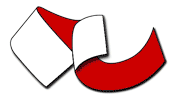
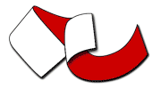

GeoServer is an open source server for sharing geospatial data.
Designed for interoperability, it publishes data from any major spatial data source using open standards.
GeoServer 3 Crowdfunding

News
GeoServer 2.27.5 Release Feb 18, 2026 • Peter Smythe
GeoServer 3 First public release date Feb 17, 2026 • Jody Garnett
GeoServer 2.28.2 Release Jan 21, 2026 • Gabriel Roldan
CITE 2026 Sponsorship Dec 30, 2025 • Jody Garnett
GeoServer 2.27.4 Release Dec 18, 2025 • Peter Smythe
Master GeoServer WPS - Buffer & Intersection Analysis Dec 3, 2025 • Nima Ghasemloo
GeoServer 2.28.1 Release Nov 25, 2025 • Andrea Aime
GeoServer 3 Sprint Update Nov 5, 2025 • Jody Garnett
GeoServer 2.27.3 Release Oct 21, 2025 • Jody Garnett
GeoServer 2.28.0 Release Oct 14, 2025 • Jody Garnett
GeoServer 2025 Q4 Developer Update Oct 14, 2025 • Jody Garnett
Produced by
Core Contributors
Core contributors take on an ongoing responsibility for the GeoServer project.


Access commercial support from these and other companies.
Part of a Vibrant Open Source Community
GeoServer is developed, tested, and supported as community-driven project by a diverse group of individuals and organizations around the world. We are proud to be a recognized Open Source Geospatial Foundation project.
GeoServer participates in the annual Free and Open Source Software for Geospatial conference.
 

Supported by
CERTIFIED OGC® COMPLIANT
GeoServer is OGC certified, implementing Web Feature Service (WFS), Web Map Service (WMS), Web Coverage Service (WCS) and Web Map Tile Service (WMTS). Additional formats and publication options are available as extensions to install including OGC API - Features and Web Processing Service (WPS).
GeoServer is compliant with OGC Web Map Service, Revision 1.3, 1.1. GeoServer is compliant with OGC Web Feature Service, Revision 2.0, 1.1, 1.0. GeoServer is compliant with OGC Web Coverage Service, Revision 2.0, 1.1, 1.0. GeoServer is compliant with OGC OGC API - Features, Revision 1.0. GeoServer is compliant with OGC Web Map Tile Service, Revision 1.0. GeoServer is compliant with OGC GeoTIFF, Revision 1.1. GeoServer is compliant with OGC GPKG, Revision 1.2.
GeoServer implements OGC Web Map Service, Revision 1.0. GeoServer implements OGC Web Processing Service, Revision 1.0. GeoServer implements OGC Catalog Services, Revision 2.0. GeoServer implements community standards Tile Map Services and WMS-C.
OGC, OGC®, and CERTIFIED OGC COMPLIANT are trademarks or registered trademarks of the Open Geospatial Consortium, Inc. in the United States and other countries.
Thanks to Gaia3D and GeoCat BV for sponsoring 2026 CITE Certification.

Sponsors
GeoServer Sponsorship contributes to project sustainability by supporting underfunded maintenance, security, and interoperability activities.
Thanks to GeoServer 2026 sponsors:

Financial support is coordinated via OSGeo sponsorship program offering increased visibility and promotion beyond this website.
Acknowledgements
Development tools provided to GeoServer as an open-source project:
Purchase of GeoServer Beginner's Guide, GeoServer Cookbook, Mastering GeoServer, Fundamentals of GeoServer [Video], and Expert GeoServer from Packt Publishing help support the GeoServer team.